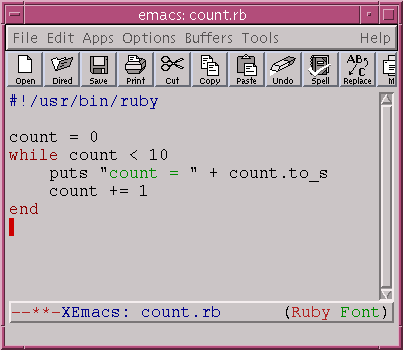

Now that you are familiar with conditions, it's time to look at another kind of loop: The while loop.
This type of loop is much more powerful than the one you've seen already. But it requires understanding conditionals. It's basic for is:
while cond ... end
Where cond is a condition like the ones you saw in the last chapter.
Here is a simple example:
Let's go through this program:
This continues on until count is 10. So the output of this loop is:
In other words, a while loop will continue repeating the loop while the condition is true. Hence the name while.
There are some things are easy to do with a while loop, but very difficult with a 'n.times'.
Suppose that we want to know the highest power of 2 which is less than 1000. This is easy with a while loop:
Think about how difficult this would be using 'n.times'.
Rewrite this last program so that the computer asks for the maximum number and the program computes the corresponding power of two.
Run the program above, and type 1e10 as input. What happens?
If you used the String#to_i method, chances are that "1e10" was converted to 1. Let's go to irb to try this out.
You see, 1e10 is a Float. Thus, you have to use String#to_f instead.